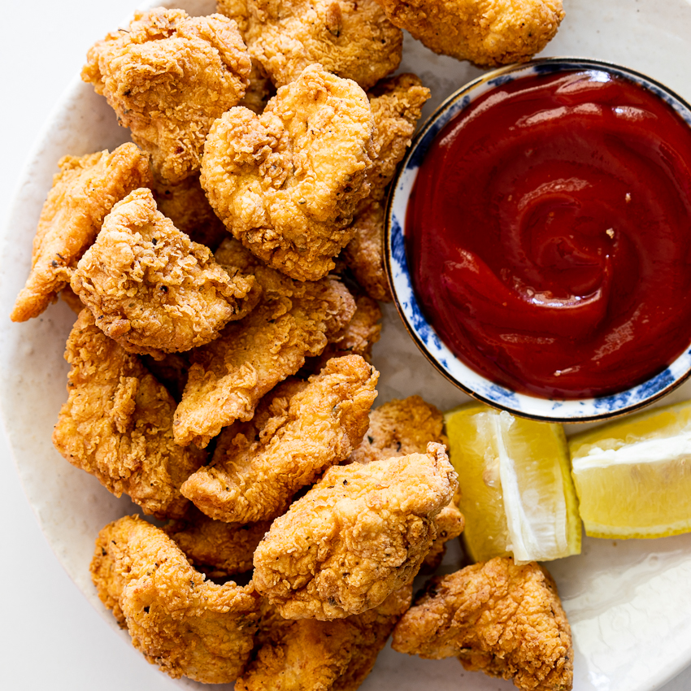

Crispy Chicken Nuggets

Description
These are the BEST crispy baked chicken nuggets you’ll ever make! This delicious, healthy chicken nuggets recipe takes just about 30 minutes from start to finish and uses simple ingredients like panko breadcrumbs, chicken breast and spices. Serve with honey mustard, ketchup or your favorite BBQ sauce. Kid-friendly and adult approved!
Ingredients
- 1 egg
- salt and ground black pepper to taste
- 2 ½ cups crispy rice cereal (such as Rice Krispies®), crushed
- 2 tablespoons butter
- 1 ¼ pounds skinless, boneless chicken breasts, cut into 20 pieces
- 2 tablespoons water
- ¼ cup extra-virgin olive oil
Steps
- Beat egg, salt, and pepper together in a bowl. Pour crushed cereal into a separate bowl. Coat chicken pieces in egg mixture. Press chicken pieces into cereal until coated.
- Heat oil and butter together in skillet over medium heat; cook and stir chicken until coating is golden brown and meat is no longer pink in the center, about 7 minutes.
- Whisk preserves and water together in a saucepan over medium-low until heated through and smooth, 2 to 3 minutes. Serve apricot sauce with chicken nuggets.
Go to the Homepage